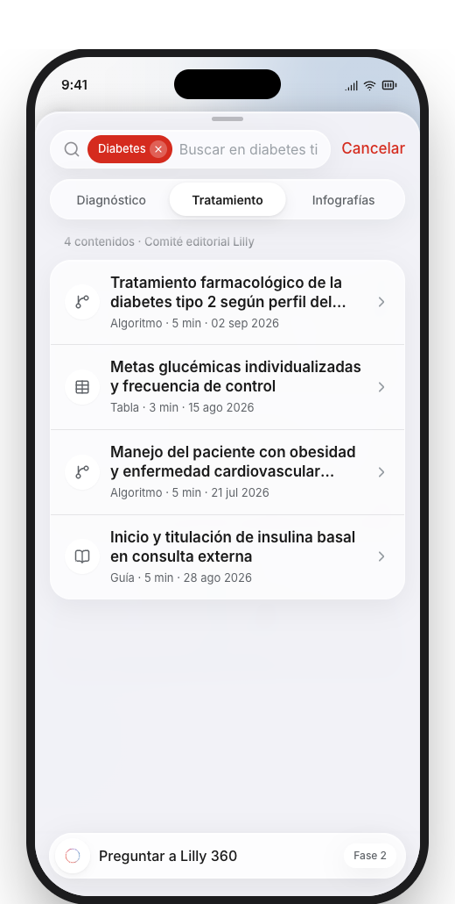
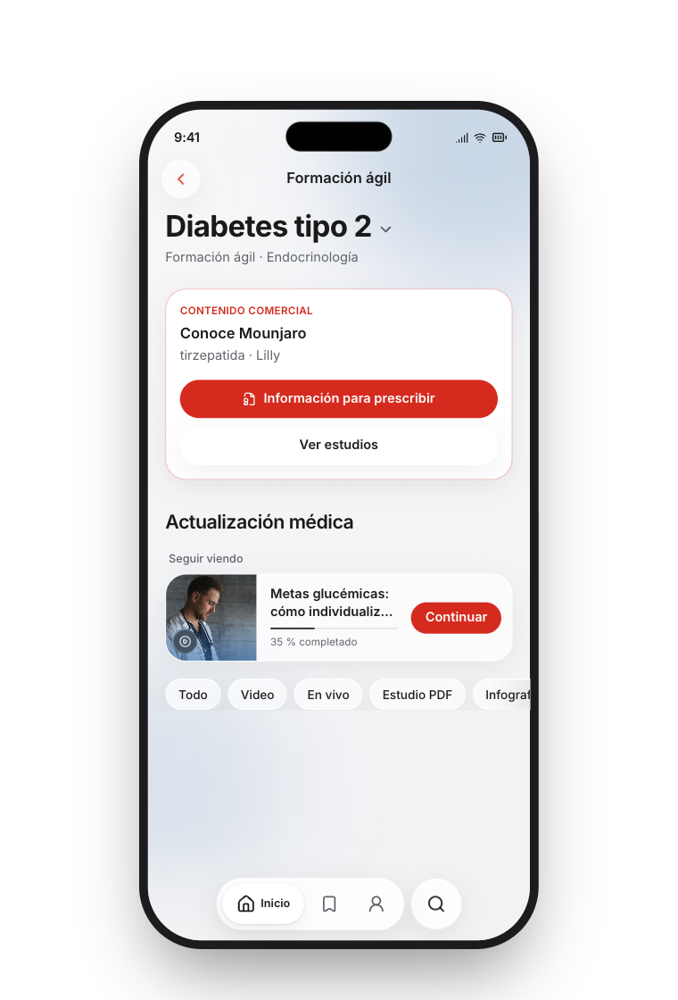

DocRed combina comunidad médica, educación digital, contenido especializado y tecnología para acercar información relevante a los profesionales de la salud en Colombia y Latinoamérica.
Ese conocimiento del médico, de sus tiempos y de sus necesidades digitales es el punto de partida de 360.
360 es la plataforma para los cuatro momentos del día de un médico: resolver la duda con el paciente al frente, ponerse al día en el break, seguir formándose y encontrarse con sus colegas.
El entendimiento del reto
Pero entender el reto no comienza con una plataforma. Comienza entendiendo el día de un médico.
Conozca al Dr. Óscar Martínez
Inicio de la jornada
Queremos presentarles a
Médico general · Bogotá
Ve un paciente cada veinte minutos. Entre uno y el siguiente, cierra historias clínicas, resuelve trámites, firma órdenes. Y en medio de todo eso, lo que más disfruta de ser médico —junto con sus pacientes— es seguir aprendiendo: lo nuevo de su especialidad, lo que cambió esta semana, lo que todavía no sabe. Es el médico para quien construimos Lilly 360.
Lo que identificamos
Consultas rápidas. Preguntas que no dan espera: surgen con el paciente en frente, y la respuesta tiene que llegar ahí mismo, no después.
Formación continua. Lo que quiere aprender cuando por fin tiene un momento: el almuerzo, una sala de espera, el camino a casa.
Lilly 360 tiene que resolver las dos. No una plataforma de contenidos con buscador encima, sino dos experiencias distintas para dos momentos distintos del mismo día.
9:00 a. m.
A las nueve entra María, 54 años. Los signos apuntan a diabetes tipo 2, pero el Dr. Óscar tiene una sospecha que no puede quedar para después: necesita confirmar el protocolo de diagnóstico ahí mismo, con ella sentada frente a él.
En ese momento, 360 entra en su día.
Qué hizo 360 para que la consulta rápida no le quitara ni un minuto

1Entra por la enfermedad, no por el título
2Contenido aprobado y siempre vigente
3Pocos elementos por nivel: baja carga mental
4Confirma el algoritmo en menos de un minuto
ResultadoÓscar continuó la consulta sin perder el hilo y sin hacer esperar a María.
Mediodía
Ya no hay urgencia. Tiene veinte minutos de almuerzo, y quiere aprovecharlos en lo que más disfruta de su profesión: seguir aprendiendo. No le alcanza para leer un estudio completo, pero sí para un webinar corto con un experto, un microaprendizaje con certificado, o el resumen de lo nuevo en su especialidad.
En ese momento, 360 entra en su día.
Qué hizo 360 para que la formación continua no se sintiera como una tarea más

1Video, audio, estudio o infografía
2Webinars cortos y sesiones grabadas
3Microaprendizajes que evalúan y certifican
4Biblioteca para guardar y priorizar
5Continúa entre momentos y dispositivos
6Lo comercial, separado de lo médico
ResultadoÓscar se fue a almorzar sabiendo algo que antes no sabía.
Al final del día
El webinar de mediodía no lo vio completo: guardó dos piezas más para cuando tuviera tiempo. Esa noche, ya en casa, retomó una de ellas desde el computador, exactamente donde la había dejado.
Eso es lo que hace Lilly 360 por su formación: no depende de un solo momento ni de un solo dispositivo. Empieza en el celular al mediodía y termina en el computador en la noche, sin perder el hilo.
Una vez al mes, el Dr. Óscar se conecta a una discusión clínica híbrida: algunos médicos están en la sala, otros entran por video desde otras ciudades. Ahí comparte casos, escucha a otros especialistas, y se entera de lo que está cambiando en su práctica.
Lilly 360 conecta esos espacios académicos y comunidades de práctica: no es solo contenido para consumir solo, es la red de colegas con la que el Dr. Óscar ya cuenta, ahora un clic más cerca.
En su día encontró las dos cosas que necesitaba: una respuesta que no podía esperar, y un espacio para seguir aprendiendo en el poco tiempo libre que tiene.
Por conocer así a los médicos es que DocRed le propone a Lilly un entorno que responde a sus necesidades reales como usuarios digitales. Eso es lo que genera adherencia, y lo que puede convertir a Lilly 360 en un sitio destino para miles de médicos en Colombia.
No es una lámina: es el producto funcionando en los tres dispositivos. Entra por donde quieras.
Y esto es lo que construimos
El prototipo está completo y funciona en celular, tablet y computador: el registro, los cuatro momentos, y la experiencia completa del médico.
Aproximación de mockups. Imágenes de referencia hasta tener aprobaciones. No es una propuesta definitiva.